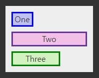
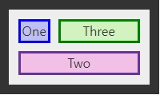
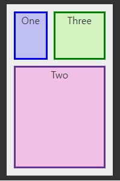

| grid |
grid CSS 속성은 외재적인 속성값과 내재적인 속성값을 한번에 설정합니다. |
| grid-area |
grid-area 속성은 grid-row-start , grid-column-start, grid-row-end and grid-column-end 값을 한번에 설정하는 속성입니다. 해당 속성값은 grid item의 크기와 위치를 결정합니다. |
| grid-auto-columns |
grid-auto-columns CSS 속성은 내재적 생성 그리드 컬럼의 크기를 지정 트랙 의 트랙 패턴.
|
| grid-auto-flow |
grid-auto-flow 자동 배치 알고리즘이 자동 배치 항목을 그리드로 유입 얻을 방법을 정확하게 지정 작동 방식 CSS 속성을 제어합니다.
|
| grid-auto-rows |
grid-auto-rows CSS 속성은 암시적으로 생성된 그리드 행 트랙 또는 트랙 패턴의 크기를 지정 합니다.
|
| grid-column |
grid-column CSS 약식 속성 은 그리드 배치에 선, 범위 또는 아무것도 제공하지 않음(자동)을 통해 그리드 항목의 크기와 위치 를 지정하고 그리드 영역 의 인라인 시작 및 인라인 끝 가장자리를 지정합니다 . |
| grid-column-end |
grid-column-endCSS 등록함으로써 그 블록 엔드 에지 지정의 격자 위치에 라인, 스팬, 또는 아무것도 (자동)에 기여함으로써 그리드 칼럼 내의 격자 항목의 종료 위치를 지정하는 격자 영역 . |
| grid-column-gap |
CSS의 속성은 갭 (크기 설정 홈통 소자의 열을 사이).column-gap |
| grid-column-start |
grid-column-start CSS 속성은 그리드 위치에 선, 스팬, 또는 아무것도 (자동)를 기여함으로써 그리드 컬럼 내에서 그리드 항목의 시작 위치를 지정합니다. 이 시작 위치는 그리드 영역 의 블록 시작 가장자리를 정의합니다 . |
| grid-gap |
CSS 속성은 행과 열 사이의 간격( 거터 )을 설정 합니다. 및 의 줄임말 입니다 .gap row-gapcolumn-gap |
| grid-row |
grid-row CSS의 단축형 속성 함으로써 개시 인라인 및 인라인 엔드 에지를 지정하여 그 격자 위치에 라인, 스팬, 또는 아무것도 (자동)에 기여함으로써 그리드 행 내의 격자 아이템의 크기 및 위치를 지정 격자 영역 . |
| grid-row-end |
grid-row-end CSS 등록하여 해당의 인라인 단연 지정의 격자 위치에 라인, 스팬, 또는 아무것도 (자동)에 기여함으로써 그리드 행 내의 격자 항목의 종료 위치를 지정하는 격자 영역 . |
| grid-row-gap |
CSS 속성 은 요소의 그리드 행 사이 의 간격( 거터 ) 크기를 설정합니다.row-gap |
| grid-row-start |
grid-row-start CSS 등록하여 해당의 인라인 시작 에지 지정의 격자 위치에 라인, 스팬, 또는 아무것도 (자동)에 기여함으로써 그리드 행 내의 격자 항목의 시작 위치를 지정하는 격자 영역 . |
| grid-template |
grid-template CSS 속성은 그리드 열 , 행 및 영역 을 정의하기 위한 약식 속성 입니다 . |
| grid-template-areas |
grid-template-areas CSS 속성을 지정라는 그리드 영역 그리드의 셀을 수립하고 그들에게 이름을 할당. |
| grid-template-columns |
grid-template-columns CSS 속성은 라인 이름과 트랙 크기 조정 기능을 정의 |
| grid-template-rows |
CSS 속성 은 행 이름을 정의하고 그리드 행grid-template-rows 의 크기 조정 기능을 추적합니다. |
grid: auto-flow / 1fr 1fr 1fr;

grid: auto-flow dense / 40px 40px 1fr;

grid: repeat(3, 80px) / auto-flow;
